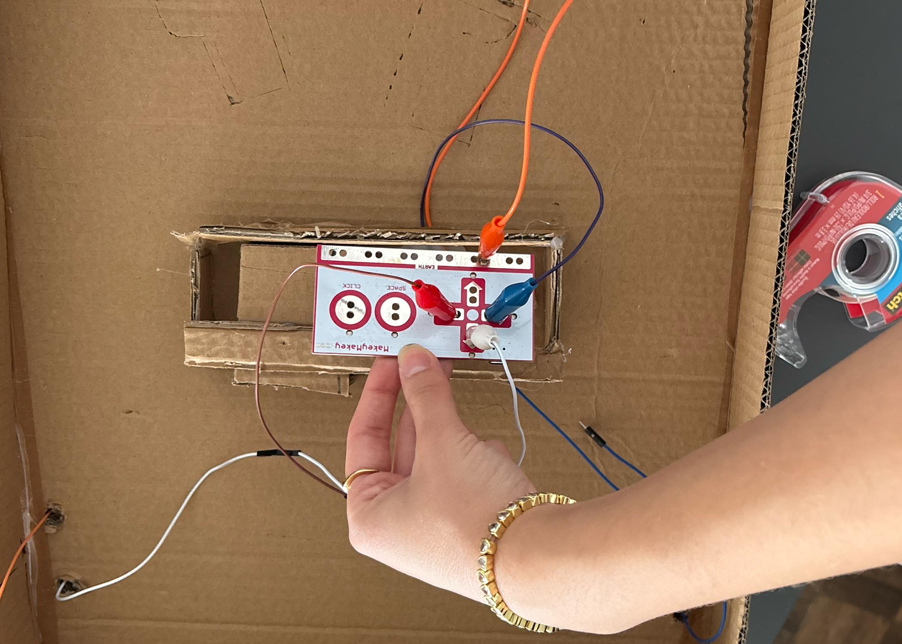
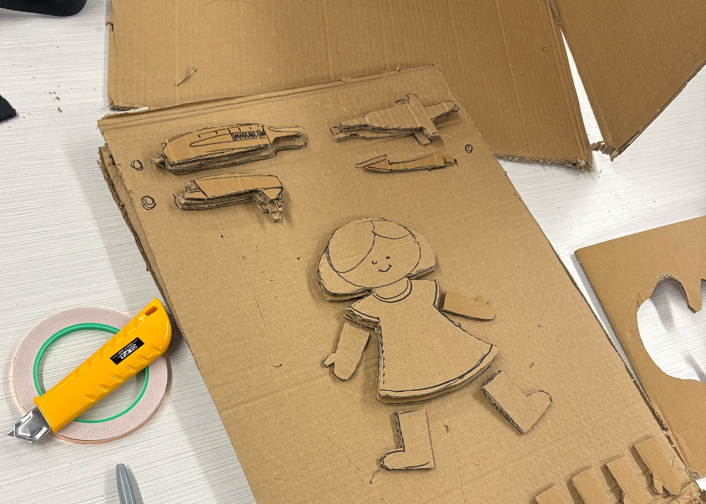
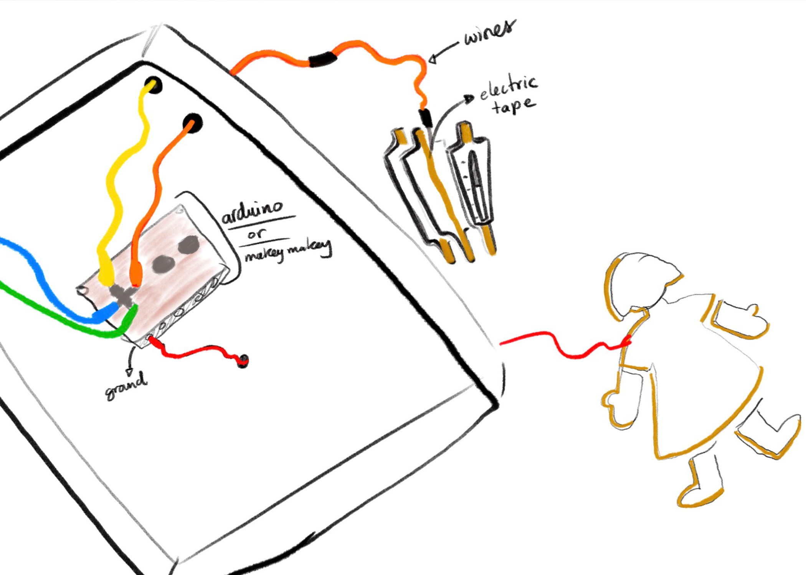
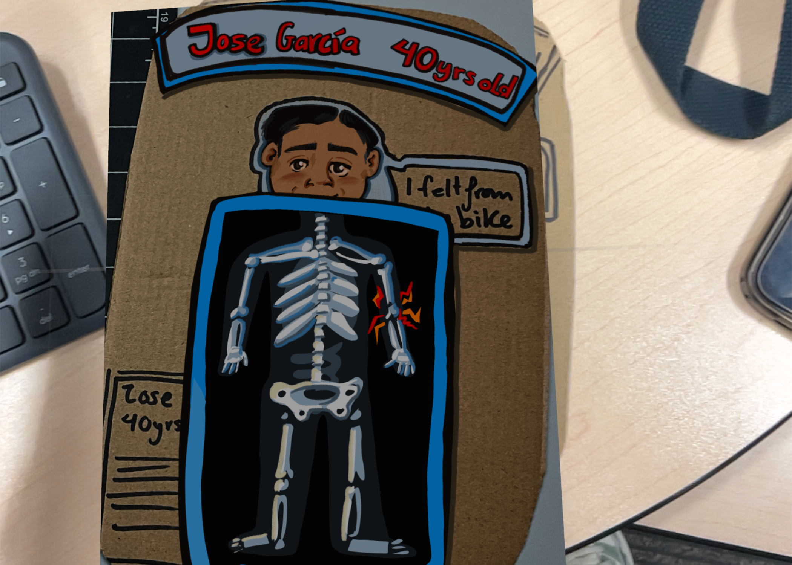
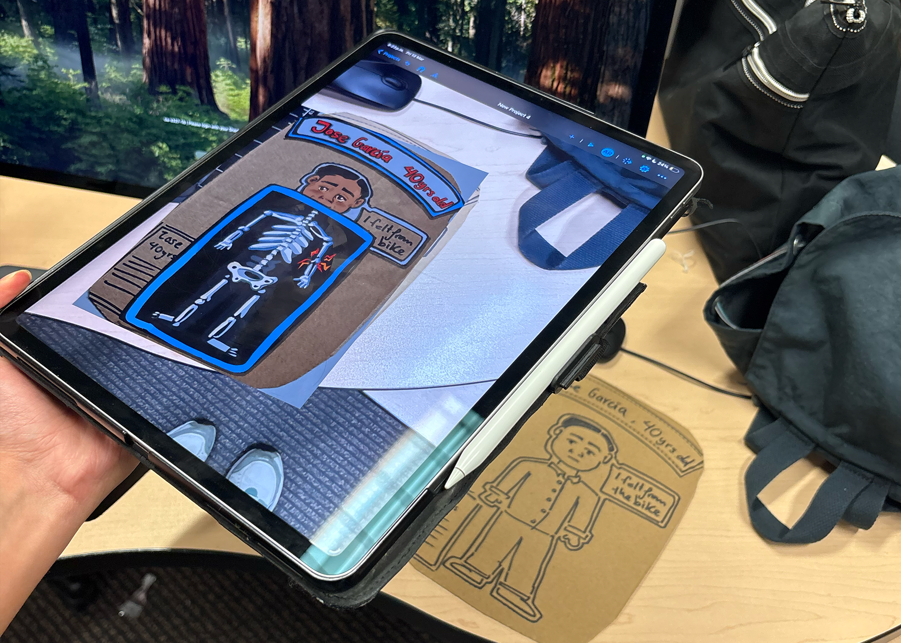
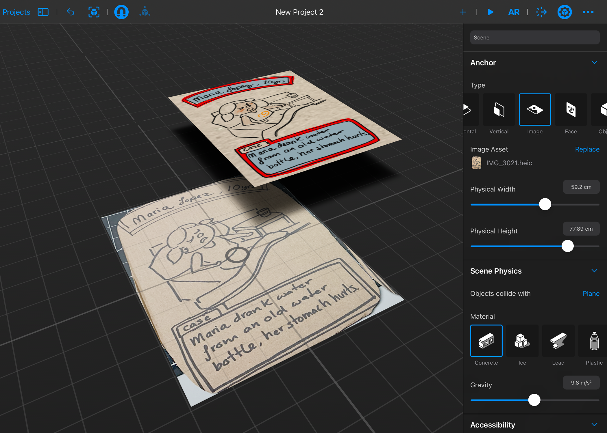

Special Topics Module 2
Research & Activity Documentation
Monserrat Cardenas
Project 2
Module 2
Ideation for an interactive doctor kit that combines laser cut, Arduino and AR to create a learning toy. It is a role-play toy were kids play as doctors, to discover their passion for medicine and the procedure to cure a patient.
Activity 1
Activity 1 Testing board.



Activity 2
Activity 2 AR testing



Project 2
Project Concept
My little doctor kit is an interactive toy that combines laser cutting, Arduino, and augmented reality (AR) to create a learning experience for children. The toy is designed as a role-playing game where kids can play as doctors, discovering their passion for medicine and learning about the procedures to cure patients.

Research Reflection
When I chose this class, I was initially planning to create an interactive projection mapping experience for kids where they could learn about history. My main goal was to design an engaging interactive experience for children as my target audience. Now, the design is better suited for an individual project, where I can combine the knowledge I gained in past semesters, especially in physical computing, into a personal project. I care deeply about this toy and aim to develop a strong case study that I can share with children’s product companies, helping me build a path in the kids’ industry.
Next Steps
From peer feedback, I've learned what is my next steps for project 2 prototyping. I’ll begin with low fidelity cardboard for the board including some wires to test Arduino and some basic paper with an image to test the AR. Once the interaction feels ready to test, I will ask for feedback from peers during some classes, and continue levelling up the prototype following the action research. From the feedback I will focus on: Creating 2d ar images Focus more on the user and emotional connection Start learning reality composer Arduino and collect sounds
Powered by w3.css